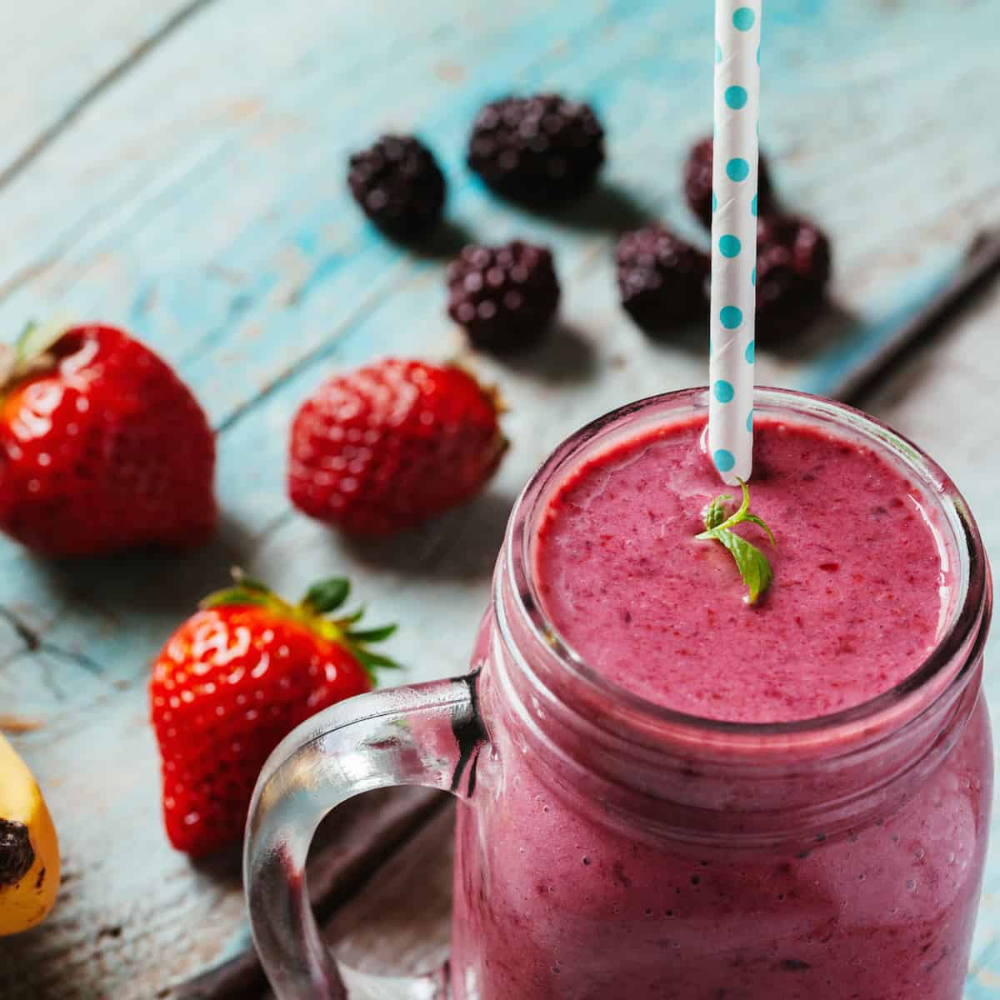

Smoothies Recipes
Smoothies can be made with a variety of fruits, vegetables, and other nutrient-rich ingredients, making them a great source of vitamins, minerals, and, of course, a great source of antioxidants
Click the item to see the detailed recipe
Berry Blast Smoothie

Ingredients:
- 1 cup frozen mixed berries (strawberries, blueberries, raspberries)
- 1 banana
- 1 cup almond milk (or any milk of your choice)
- 1 tablespoon chia seeds (optional, for extra fiber and omega-3s)
Recipe:
- Add all ingredients to a blender.
- Blend until smooth and creamy.
- Pour into a glass and enjoy immediately!
Green Power Smoothie
Ingredients:
- 1 cup spinach (or kale)
- 1 banana
- 1/2 avocado (for creaminess)
- 1 cup coconut water or plain water
- Juice of 1/2 lime or lemon (optional)
Recipe:
- Blend spinach, avocado, and liquid until smooth.
- Add the banana and blend again until creamy.
- Add the banana and blend again until creamy.
Tropical Delight Smoothie

Ingredients:
- 1 cup frozen mango chunks
- 1/2 cup pineapple chunks
- 1/2 cup Greek yogurt (for protein)
- 1 cup orange juice or coconut water
Recipe:
- Combine all ingredients in a blender.
- Blend until smooth and thick.
- Garnish with a pineapple slice (optional) and enjoy!